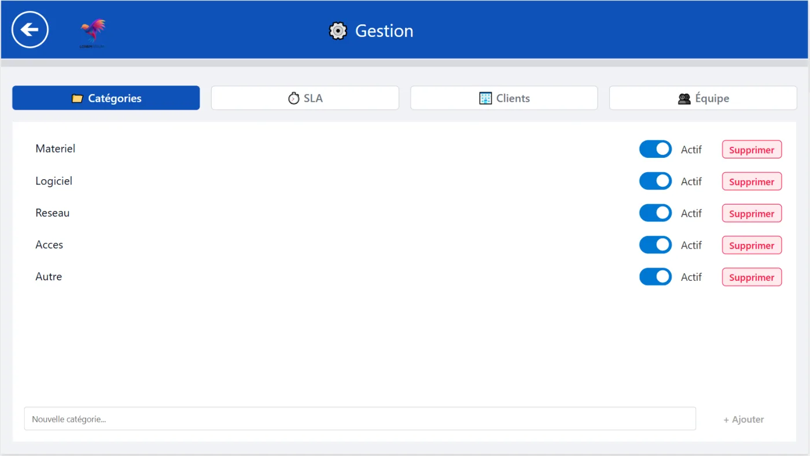

Microsoft · 2026
Ticketing IT
integrated with Microsoft 365
SMBs drown their IT requests in email, Teams and phone calls: no visibility, manual processes, and a Power Platform that's already in their Microsoft 365 license but left underused.
 Ticketing IT
Ticketing ITThe idea
Your IT support, simplified
01 Why
SMEs drown their IT requests in emails, Teams and phone calls: no visibility, manual processes while a Power Platform is already included in their Microsoft 365 license, but underused. Ticketing IT starts from that waste.
“ The Power Platform they already pay for finally put to use. ”
02 The approach
a.On top of the existing
Built on the Microsoft 365 already in place no new tool, no new license.
b.A request in 30s
Minimal user portal: three fields, and it's sent.
c.SLA-driven
Admin dashboard with real-time KPIs and SLA badges (green / orange / red).
d.Deployable in half a day
Set up in an existing tenant, training included.
03 The result
Presented on powerflows.fr deployable in half a day inside an existing Microsoft 365 tenant, training included.
Gallery


